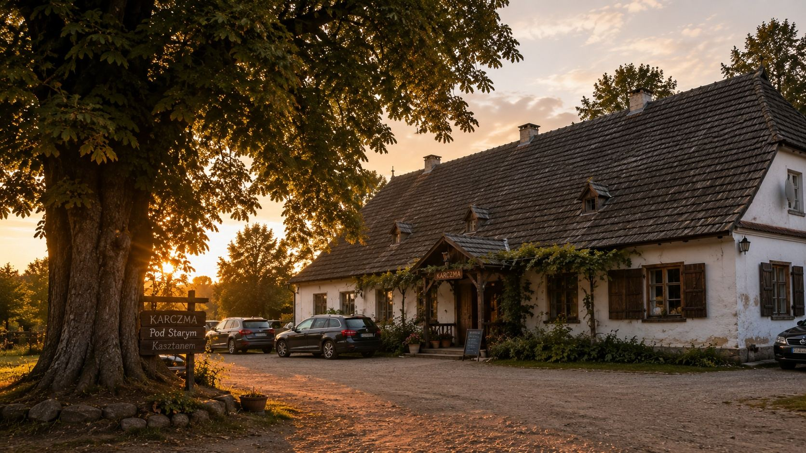
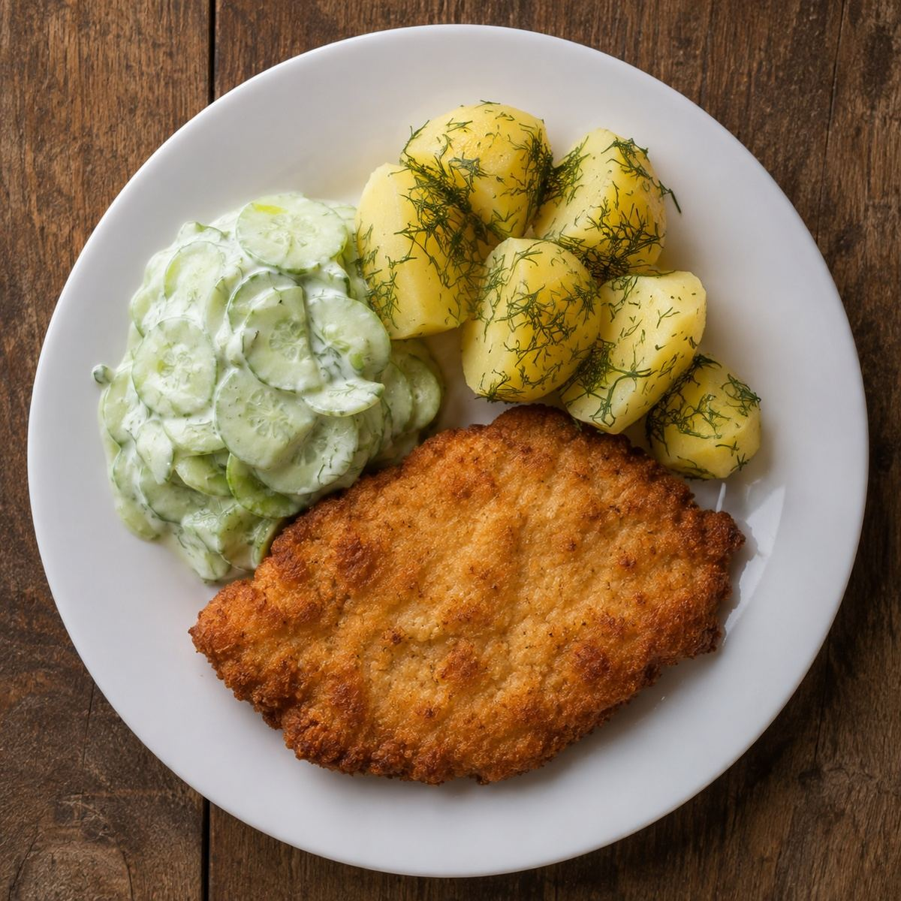
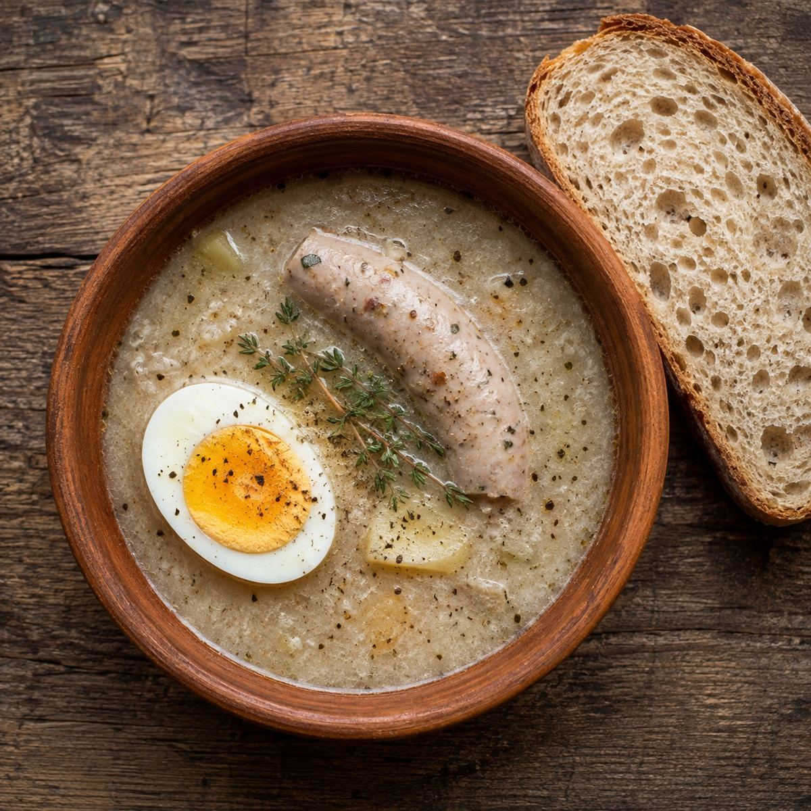
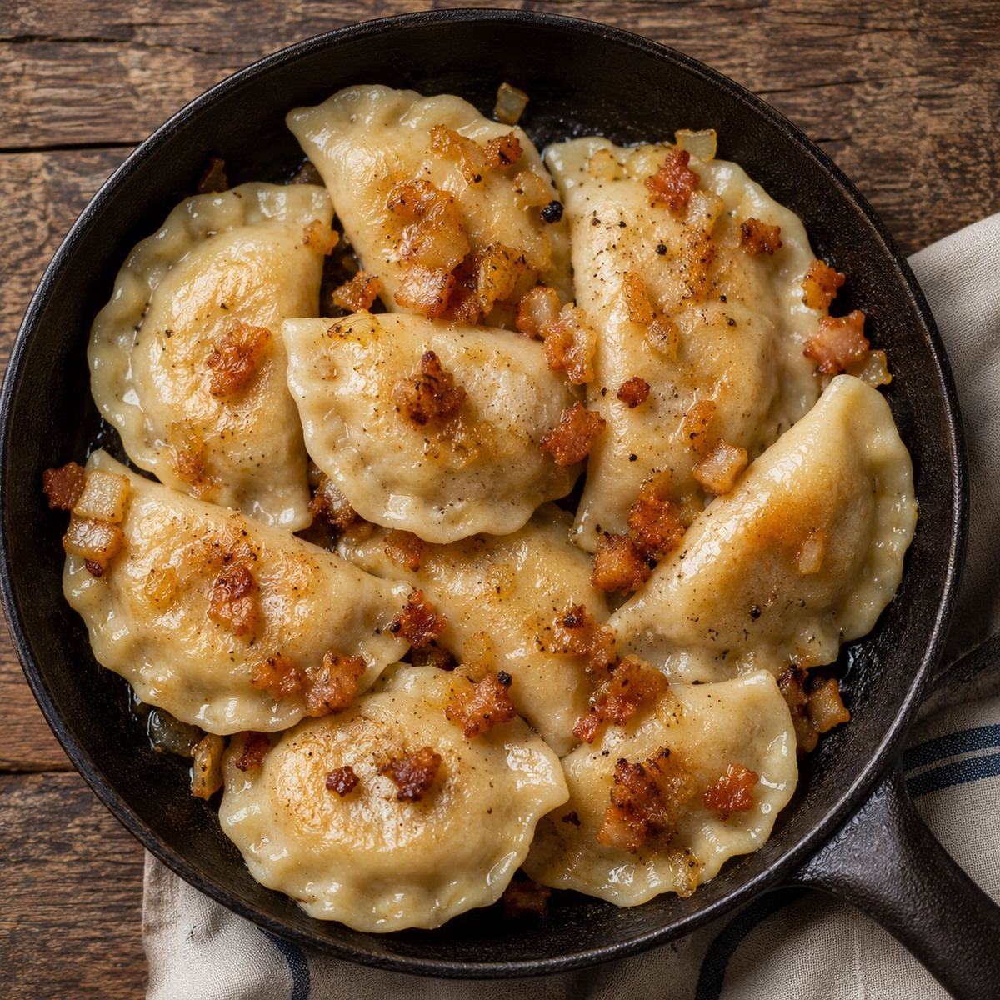
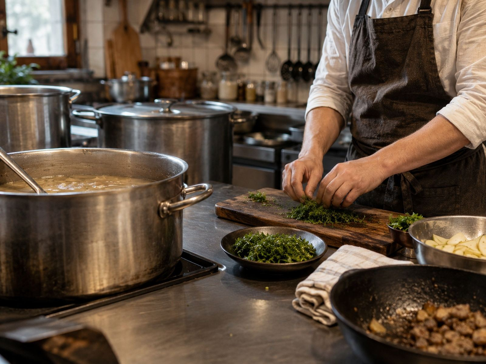
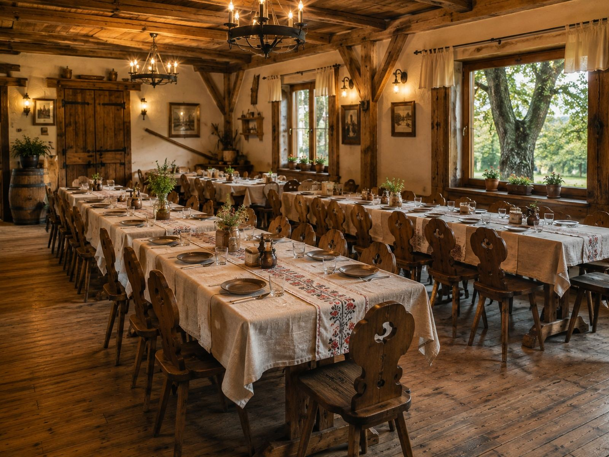

Zupa, drugie danie i kompot.
Czterdzieści siedem lat w tym samym budynku, pod tym samym kasztanem. Bez karty w telefonie i bez muzyki z głośnika.
Zestaw obiadowy · 34 zł
Tablica dnia
Ta sama tablica co przy wejściu, tylko że tutaj. Zupa, danie główne i kompot w jednej cenie, codziennie od dwunastej do wyczerpania.
Rosół z makaronem
z domowego makaronu, z natkąKotlet schabowy
ziemniaki z koperkiem, mizeriaKompot z wiśni
z zeszłorocznych, z naszego saduZestaw wydajemy do wyczerpania — w soboty bywa, że kończy się przed piętnastą. Można zadzwonić i odłożyć porcję.
Poza tablicą
Karta
Krótka, bo wszystko robimy sami. Czego nie ma na liście, tego dziś nie ma naprawdę.
Na początek
Zupy
Dania główne
Dla dzieci i na słodko



Nasza kuchnia
Gotujemy tak, jak gotowała tu nasza matka.
Karczmę otworzyli w 1978 roku nasi rodzice, przy drodze na Łowicz. Prowadzimy ją drugie pokolenie. Przed wejściem rośnie stary kasztan — sąsiedzi mówią, że posadzono go jeszcze przed wojną.
Zakwas na żurek nastawiamy co tydzień, z żytniej mąki i czosnku, według tej samej receptury od ponad dwudziestu lat. Stawiamy na zdrową żywność od sprawdzonych lokalnych rolników. Ziemniaki od sąsiada zza płotu, ogórki kisi pani Jadwiga z Woli, chleb z piekarni w Bielawach.

Kuchnia, wtorek przed dwunastą.
Sala i przyjęcia
Komunie, chrzciny i osiemnastki.
Jedna sala, drewniane stoły, kasztan za oknem. Nie robimy wesel na dwieście osób — robimy przyjęcia, na których wszyscy się słyszą.

Menu ustalamy przy stole, na kartce. Można przynieść własny alkohol i własny tort — nie doliczamy za to ani grosza, bo to zawsze wydawało nam się dziwne.
Terminy na komunie w maju schodzą zwykle do lutego. Na resztę roku wystarczy zadzwonić dwa tygodnie wcześniej.
Przyjmujemy też konsolacje. Wtedy sala jest tylko dla rodziny, bez muzyki i bez dekoracji, a zamówienie przyjmiemy nawet tego samego dnia rano.
Dojazd i kontakt
Przy drodze na Łowicz, pod największym kasztanem we wsi.
Parking na dwadzieścia samochodów od strony podwórza. Autokary też się mieszczą, ale prosimy o telefon dzień wcześniej.
- Telefon
- +48 46 838 02 12
- Adres
- Bielawy 41, 99-423 Bielawy
- karczma@starykasztan.pl
- Godziny
- wt–czw 12–20 · pt–sob 12–22 · nd 12–18